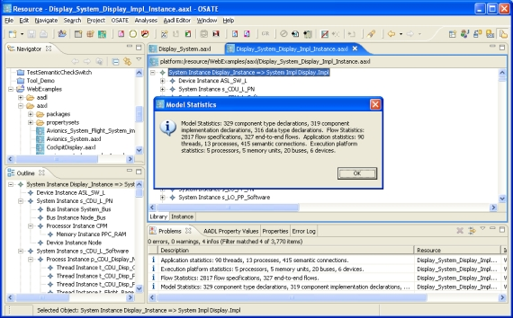

Previous
Next
Previous
Next 
| 9.2 Architecture Analyses |
| 9.2.1 Model Statistics |

Figure 27: Reporting model statistics on an instance model
This analysis is applicable to AADL specifications and system instances. It is invoked using
“Analyses > Architecture > Model statistics” in the menu bar or the button in the toolbar.
This analysis collects model statistics of two kinds and can be invoked on both declarative
AADL models and AADL instance models. In both cases it keeps track of the number of
declarations of different kinds in all declarative model files in the workspace. When invoked on
an AADL instance model it also keeps track of components of different categories,
connections, flows, etc. of the instance model. Figure 27 illustrates how the model statistics
plug-in reports its results both through a dialog box and as information markers in the
“Problems” view.
| 9.2.2 Stream Miss Rate Checking |
This analysis checks whether the miss rates in streams communicated through ports are
consistent, i.e., the miss rate of an out port does not exceed the miss rate of an in port. The
miss rate of an out port represents the maximum miss rate of the generated stream through this
port. The miss rate in an in port represents the maximum miss rate that a component is willing
to handle.
This analysis is invoked using “Analyses > Architecture > Check Miss Rates” in the menu bar
or the button in the toolbar. It may only be applied to AADL Specifications.
Miss rates are specified on ports using the property SEI::StreamMissRate,
a aadlreal-
valued property defined in the SEI property set, i.e.,
Property set SEI is
StreamMissRate: aadlreal applies to (port);
End SEI;
The analysis performs this check for all connections if either or both the source or destination
ports have a value for this property. The check can be invoked on an AADL XML file, or on
any of the AADL model objects in the AADL Object Editor. In both cases it is applied to all
connections in the AADL model. A connection is reported if the miss rate of the destination
port is lower than the miss rate of the source port of any connection.
You can use this analysis on any AADL model that has property values for this property
associated with some of its ports.
A code snippet from the SunseekerDemo example:
process Sunseekerplant_Type
features
Controllerinput : in data port Beacon_Standard::Single_Float;
Outputfeedback : out data port Beacon_Standard::Single_Float
{ SEI::StreamMissRate => 0.06;};